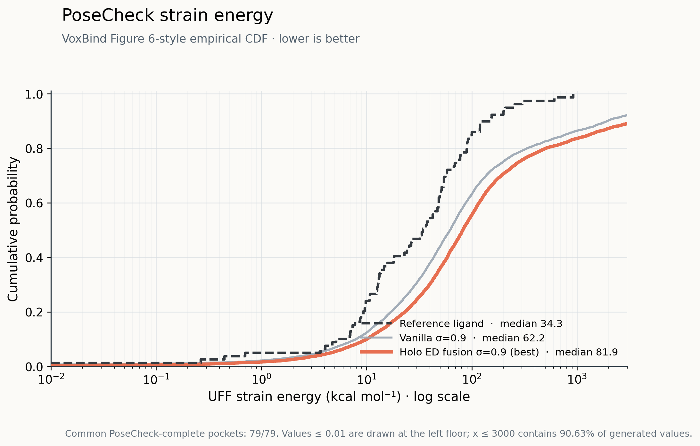

PoseCheck (Harris et al., 2023) comparing vanilla VoxBind against the frozen-encoder
atomblob7 fusion model. Two measures: UFF strain energy (internal energy of the
generated pose relative to a relaxed one) and steric clash count (ligand against
the hydrogenated pocket). Where the 2026-08-13 version used only the 30-pocket intersection,
this run covers all 79 pockets for both models.
1Bottom line
Vanilla wins on pose quality. The fusion model's median strain is 32% higher
(81.9 vs 62.2) and it carries 23% more clashes (6.44 vs 5.23). Whatever the fusion model gains
in docking score does not show up in the physical plausibility of its poses — it loses ground there.
Model
Median strain
Strain IQR
Mean clashes [CI95]
Median clashes
n (molecules)
Reference ligand
34.28
10.7 – 72.2
6.797 [5.56, 8.13]
5.0
79
Vanilla σ=0.9
62.19
22.7 – 197.9
5.225 [4.73, 5.78]
4.0
7,855
Holo ED fusion σ=0.9 (atomblob7 v2p1)
81.92
30.9 – 280.9
6.439 [5.78, 7.18]
5.0
7,826
Strain is the per-molecule distribution over all 100 molecules per pocket. The CI95 on mean
clashes comes from a 10,000-resample bootstrap at the pocket level (seed 260813) —
bootstrapping over molecules instead would ignore within-pocket correlation and report an
interval narrower than the truth.
Strain energy
How much internal conformational energy the generated pose carries above the same molecule's
relaxed conformer — high strain means the pose is contorted into a shape the molecule would
not naturally hold.
Steric clash
How many ligand–protein atom pairs sit closer than their van der Waals radii allow — a count
of physically impossible overlaps between the molecule and the pocket.
Three things worth reading off this
Vanilla clashes less than the reference ligands themselves (5.23 vs 6.80),
with intervals that barely overlap. Crystal ligands do not score zero clashes because
PoseCheck re-protonates before judging; that value is the practical floor for this measure.
The fusion model is statistically indistinguishable from the reference on clashes —
[5.78, 7.18] against [5.56, 8.13], heavily overlapping. So the story is less "fusion is bad"
than "vanilla is unusually clean."
Both generative models carry more strain than the reference (62.2 / 81.9 vs 34.3).
Generated poses remain locally strained — a limitation the two models share.
2Figures

Figure 6 · strain energy ECDF (log x-axis). Further left and higher is better.
The vanilla curve sits above fusion across the whole range, with the reference furthest left.
90.6% of generated values fall inside the x-axis cap of 3,000; 77 values were clipped at the
lower floor of 0.01.
Strain rises with molecule size (Spearman ρ = +0.60 between strain and heavy-atom count over
4,143 molecules), and the fusion model does generate slightly larger ligands — mean 24.93 heavy
atoms against vanilla's 24.00. So the obvious question is whether the whole gap is a size artifact.
Binning both models by heavy-atom count answers it: it is not.
Heavy atoms
n
Median strain
Mean clashes
van.
fus.
van.
fus.
van.
fus.
10 – 18
1,759
1,541
21.3
24.4
3.83
4.61
18 – 22
963
769
46.1
48.0
4.49
5.27
22 – 26
1,272
1,146
60.8
81.7
5.01
6.47
26 – 30
1,285
1,279
75.8
102.5
5.65
7.35
30 – 36
1,322
1,527
108.7
128.5
6.21
8.02
36 – 60
801
1,078
341.4
219.9
7.32
7.47
The fusion model is behind in every bin from 10 to 36 heavy atoms, so the deficit survives
size matching — the 0.93-atom mean difference is far too small to produce a 32% strain gap on its
own. Two details are worth noting: the gap peaks in the mid-size range (22–30 atoms, where median
strain runs 30–35% higher), and it reverses in the largest bin, where fusion is
substantially better on strain (219.9 vs 341.4) and tied on clashes. Whatever the fusion
signal is doing, it is not a uniform penalty.
Size is still a confound for docking, just not for this. Heavy-atom count
correlates with Vina Dock at ρ = −0.80 — far stronger than its effect on strain. Any
Vina comparison between models that generate different-sized ligands needs the same binning
treatment before it means anything.
4Where the deficit is — and is not
PoseCheck says the fusion model is behind, but PoseBusters — run on the same molecules — says the
two models are equivalent. Every hard validity check is a tie, and the headline PB-valid rate is
marginally higher for fusion.
PoseBusters check
Vanilla
Fusion
Δ
PB-valid (all checks pass)
0.743
0.754
+0.011
non-aromatic ring non-flatness
0.816
0.838
+0.022
volume overlap with protein
0.997
0.998
+0.001
minimum distance to protein
0.984
0.984
0.000
internal energy
0.978
0.976
−0.002
bond lengths
0.980
0.974
−0.006
bond angles
0.964
0.958
−0.006
internal steric clash
0.972
0.963
−0.009
aromatic ring flatness · double bond flatness · all atoms connected · sanitization
1.000
1.000
0.000
Fractions are the share of molecules passing each check, over the subset where the PoseBusters
worker completed (vanilla n = 4,295; fusion n = 3,293). The remainder timed out during the earlier
--pose all run and was never recomputed, so these subsets are not guaranteed
unbiased — treat the table as strong evidence of a tie rather than a precise measurement.
A hypothesis for the gap
Putting the two tools together points somewhere specific. PoseBusters asks
pass or fail against a threshold; PoseCheck measures how much. The fusion model
fails no more thresholds than vanilla, yet is consistently more strained and more clashed. So the
reading is:
The fusion model is probably not producing broken geometry — it is producing poses that sit
tighter against the receptor. It is conditioned on the receptor's electron density and
trained to fill that envelope, which pushes ligand atoms closer to the pocket surface. That buys
contact — and contact is what Vina rewards — at the cost of more near-contacts counted as clashes
and a slightly more contorted conformer needed to hold the position. On this reading the docking
gain and the PoseCheck loss are the same mechanism seen from two sides, not two independent
problems.
A second, non-exclusive possibility is simply training length: 350 epochs for the
fusion model against 923 for vanilla. Fine local geometry is what a denoiser refines late, and the
non-monotonic pattern in section 3 — fusion behind everywhere except the largest ligands — would
fit an undertrained model as readily as a density-driven one.
Both of these are untested hypotheses. The mechanism claim above is inference from
two static measurements, not a controlled result. The cheap discriminating experiment is to run the
same PoseCheck on an intermediate fusion checkpoint (e.g. ep200): if strain is falling with epochs,
training length is carrying the explanation; if it is flat, the density conditioning is.
5How to read this safely
Do not use mean strain. The means come out at 2.3×108 for vanilla
and 4.2×109 for fusion. A handful of pathological poses where UFF relaxation fails
dominates the average entirely, and no model comparison survives it. Judge on
median and IQR only — the same trap that made mean Vina scores swing on a
single clashing pose.
What changed going from 30 pockets to 79
The 2026-08-13 version kept only the 30 pockets where both models had finite strain and clash
values. Those numbers were 13.1 / 31.0 / 36.5 (reference / vanilla / fusion) — less than
half of the full 79-pocket result (34.3 / 62.2 / 81.9). That subset was skewed toward
low-strain, easy pockets.
The ranking did not change: vanilla < fusion on both strain and clashes in
either version. But the gap between models widened — median strain difference went from +5.4 to
+19.7, and the clash difference from +0.67 to +1.21. The old
subset had been flattering the fusion model.
Why the earlier run stopped at 30
The moleval conda environment that hosts the PoseCheck worker was deleted along with
/opt/conda/envs on a container restart. After that, metrics.py --pose
silently recorded a pose error for every target, and the figures were drawn from whatever
intersection survived. The root cause was that the rebuild recipe existed nowhere as a script,
so it is now pinned in voxbind/scripts/rebuild_moleval_env.sh.